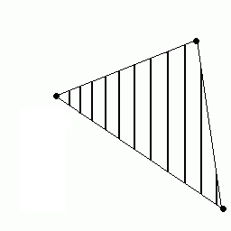

| Introduction | High Level Design | Hardware Design | Results/Conclusion | References/Appendix |
Interested in graphics and in computer vision, I decided to design an elementary graphic card for the ECE5630 final project. The objective was to design a module which could receive geometry data and lightening information as in input and displays them on the VGA. My component implements several specific topics of graphic cards:
The first part of the project was the linear extrapolation between vertices of a triangle. This is performed by drawing two lines from a common vertex to the two others, and extrapolating between points of the lines, as explained in the diagram below:
This is a 2D version of the linear extrapolation we have performed in Lab 4. On the X-axis, we have 2 points at the same abcisse which evoluate as extrapolation of single lines. There is the same extrapolation on these two points.
I implemented Z-buffering in writing the Z of each pixel in memory. When a new pixel is to be drawn, memory is check whether there is a closer point to user's point of view.
I have implemented a basic scenario of lightening, only based on directional light, regardless of the distances, like that of the sun. Nevertheless, this project does not manage shadows.
I have splitted the project into different modules which could be used independently. The three modules are:
Most of these modules have similar architecture based on a state machine and on controlling signals which are explained below:
This is the basic component to draw a line. It implements the algorithm described for Lab4, so it would not be described again. It permits to extrapolate many values (exhaustively Red, Green, Blue and Z) between that of the two extremities of the line. Because the triangle will be displayed column by column, one important consideration was the output to prevent that the module was reaching a new x in its extrapolation. This is the list of communicating signals, in addition to these mentioned above (for readability, size of signals is omitted):
The main state machine was composed of four different states:
Transitions:
This module is the core of triangle rasterization. Its objective is to receive the data of three points and to extrapolate data (r, g, b, z) of the points inside the delimited triangle. One redundancy about this module was to deal with the similar but different cases (order of the points, clock-wise versus counter-clock-wise). This is the list of specific signals:
This modules instanciates two Line Triangle Renderer to move the top and bottom lines. It garantuees that when the first line reaches its final point, this line will switch to the third point. One critical point of this module was the synchronisation of the lines. The main state machine reflects these considerations.
One critical consideration in this module is performance.
It is important that in most cases (on Drawing state) on each cycle, a new point is being calculated and provided to user module.
Two other registers, corner and second, were used to permit the switching of the top/bottom line when the second point is reached.
This switching was another difficulty.
Transitions:
This component's objective is to fill the data in memory with the output of a Triangle Renderer. This is where the Z-buffering and lightnening are implemented. This is the list of the signals users see: Memory access
In order to implement Z-buffering with a sizeable resolution, and to keep 5 bits per color channel, I have lowered my screen resolution to 512*256. This permited me to have 2 memory slots per pixel on screen, one exlusively dedicated to Z-buffering. The main state machine was composed of these different states:
| Without Z Buffer | With Z Buffer | |
| Without lighting | | |
| With lighting | | |
I did not have precise limits about what I wanted to implement, but I consider that I have succeeded in implementing the real basic-end of the graphic pipeline. The project lets some very interesting pathes for progress :
In addition to these technical issues, I stayed too much in the very last part in the pipeline. As an example, I did not reach the 3D floating computation for example, as many things which are closer to the end-user.
I will keep working on this project as my MEng project.
I would like to thank both professor Land and TA Adam Shapiro for their disponibility, all the help they provided me and to have animated one of the most teachable and interesting course of this semester.